ESSENTIAL QUESTIONHow did ordinary Americans use law, protest, and personal sacrifice to change a country not living up to its own promises?
1941
Randolph pressures FDR to desegregate defense industries during World War II.
1954
Brown v. Board declares school segregation unconstitutional.
1963
The March on Washington shows the movement's size and national pressure.
1965
The Voting Rights Act attacks racist barriers to voting after Selma.
1968
King is assassinated in Memphis while supporting striking workers.
On March 7, 1965, hundreds of people walked across the Edmund Pettus Bridge in Selma, Alabama. They were marching for the right to vote. State troopers waited on the other side with clubs, tear gas, and horses.
On March 7, 1965, hundreds of people walked across a bridge in Selma, Alabama. They were marching for voting rights. State troopers waited on the other side. The troopers had clubs, tear gas, and horses.
That day became known as Bloody Sunday. But the Civil Rights Movement did not begin or end on that bridge. It grew from decades of organizing, court cases, boycotts, sit-ins, marches, speeches, and sacrifice by ordinary people.
That day became known as Bloody Sunday. But the Civil Rights Movement did not begin or end there. It grew from years of organizing, court cases, boycotts, sit-ins, marches, speeches, and sacrifice.
CHAPTER ONE
THE LONG FIGHT THROUGH LAW
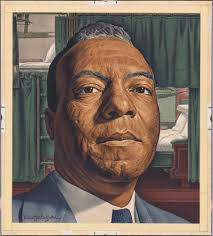
A. Philip Randolph threatened a March on Washington in 1941 to pressure FDR to desegregate defense jobs. Library of Congress.
The modern Civil Rights Movement grew out of World War II. Black Americans fought for democracy overseas while facing segregationSeparating people by race by law or custom. at home. A. Philip Randolph threatened a March on Washington in 1941. President Franklin Roosevelt responded by banning racial discrimination in defense industries.
The modern Civil Rights Movement grew out of World War II. Black Americans fought for democracy overseas. At home, they still faced segregation. A. Philip Randolph threatened a March on Washington in 1941. FDR then banned racial discrimination in defense jobs.
In 1948, President Truman ordered desegregationEnding forced separation by race. of the U.S. military. This did not end racism in the armed forces, but it was a major federal step. It showed that national pressure could force the government to act.
In 1948, President Truman ordered desegregation of the U.S. military. This did not end racism in the military. But it was a major federal step. It showed that pressure could force change.
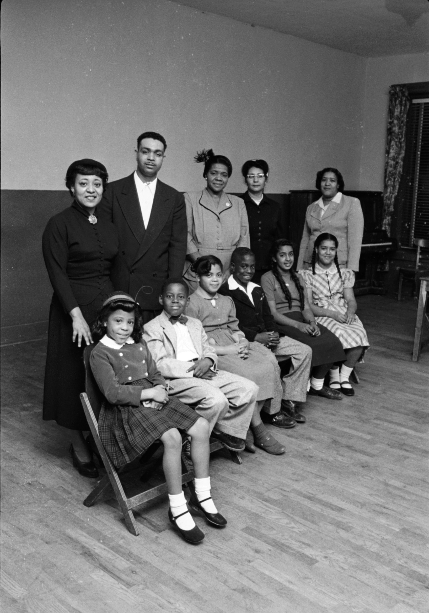
Brown v. Board of Education challenged school segregation in the Supreme Court. Wikimedia Commons / Library of Congress.
The NAACPGroup fighting for Black civil rights. used courts to attack segregation. Its lawyers argued that segregated schools violated equal protectionThe law must protect people equally. under the Fourteenth Amendment. In Brown v. Board1954 case that banned school segregation., the Supreme Court ruled that segregated public schools were unconstitutional.
The NAACP used courts to fight segregation. Its lawyers said segregated schools violated equal protection. That means the law must protect people equally. In Brown v. Board, the Supreme Court said segregated public schools were unconstitutional.
Real-world connection: Legal victories matter, but they often need public pressure to become real change.
Real-world connection: Court wins matter, but people still have to make change happen.
DID YOU KNOW
March on Washington crowd, 1963.
About 250,000 people came to the March on Washington without group texts, GPS, or social media. They traveled by bus, train, car, and foot because organizing was already a technology. The movement had built a human network strong enough to fill the National Mall.
CHAPTER TWO
DIRECT ACTION CHANGES THE STREETS
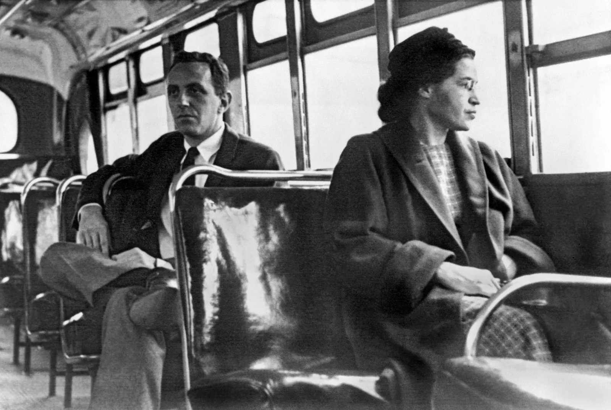
Rosa Parks helped spark the Montgomery Bus Boycott in 1955. Wikimedia Commons / Library of Congress.
In 1955, Rosa Parks refused to give up her bus seat in Montgomery, Alabama. Black residents answered with a bus boycott that lasted 381 days. The boycott used civil disobedienceBreaking an unjust law peacefully., which means peacefully refusing to obey an unjust rule. It also helped bring Martin Luther King Jr. to national attention.
In 1955, Rosa Parks refused to give up her bus seat in Montgomery, Alabama. Black residents started a bus boycott. It lasted 381 days. The boycott used civil disobedience. That means peacefully refusing to obey an unjust rule.
Students then carried the movement into lunch counters, bus stations, and city streets. Sit-ins challenged segregated restaurants. Freedom Riders challenged segregated interstate buses. These actions used nonviolent protestProtest that does not use violence. and direct actionPublic action meant to force change. to create a crisis that leaders could not ignore.
Students brought the movement into lunch counters, bus stations, and streets. Sit-ins challenged segregated restaurants. Freedom Riders challenged segregated buses. These actions used nonviolent protest and direct action to force change.
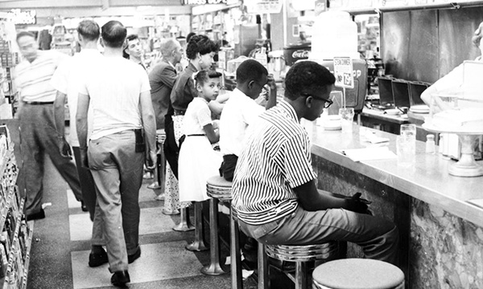
Students used sit-ins to challenge segregated lunch counters, 1960. Wikimedia Commons / Library of Congress.
In Birmingham in 1963, police used dogs and fire hoses against protesters, including children. Television carried the violence into living rooms across the nation. Many Americans who had ignored segregation could no longer look away.
In Birmingham in 1963, police used dogs and fire hoses against protesters. Some protesters were children. Television showed the violence across the country. Many Americans could no longer ignore segregation.
Birmingham police used dogs and fire hoses against civil rights protesters in 1963. Library of Congress search suggested.
FAST FACTS
THE SCALE OF CIVIL RIGHTS ORGANIZING AND CHANGE
381days Black residents kept the Montgomery Bus Boycott going, showing the power of organized sacrifice.
250Kpeople joined the March on Washington for Jobs and Freedom, proving the movement had national reach.
1964the Civil Rights Act banned segregation in public places and job discrimination by race.
1965the Voting Rights Act targeted racist barriers that blocked Black citizens from voting.
CHAPTER THREE
WASHINGTON, MISSISSIPPI, AND SELMA
In August 1963, about 250,000 people gathered for the March on Washington for Jobs and Freedom. King gave his famous "I Have a Dream" speech there. The march demanded both civil rights and economic justice. It showed the movement's size, discipline, and moral force.
In August 1963, about 250,000 people joined the March on Washington. King gave his famous "I Have a Dream" speech. The march demanded civil rights and better jobs. It showed how large and organized the movement was.
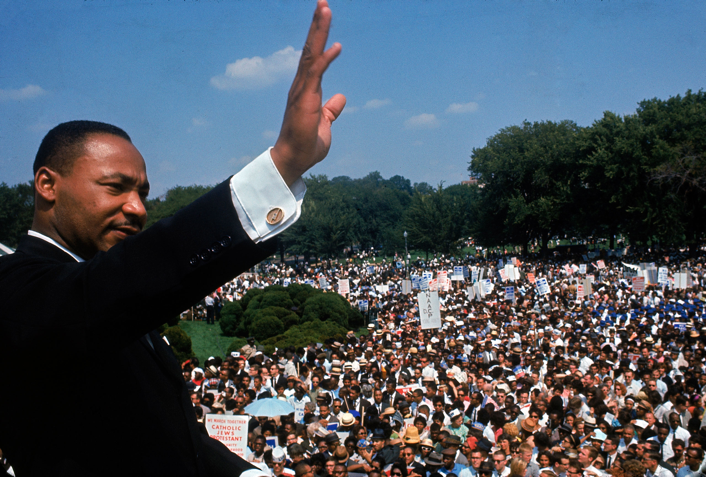
March on Washington for Jobs and Freedom, August 28, 1963. Wikimedia Commons / Library of Congress.
The movement also faced deadly violence. In 1964, civil rights workers James Chaney, Andrew Goodman, and Michael Schwerner were murdered in Mississippi. They had been helping register Black voters. Their deaths showed how dangerous voting rights work could be.
The movement also faced deadly violence. In 1964, James Chaney, Andrew Goodman, and Michael Schwerner were murdered in Mississippi. They had been helping Black people register to vote. Their deaths showed how dangerous voting rights work could be.
In 1965, marchers in Selma tried to walk to Montgomery for voting rights. On Bloody Sunday, state troopers attacked them on the Edmund Pettus Bridge. The images shocked the country. Later that year, Congress passed the Voting Rights Act1965 law protecting Black voting rights., which attacked racist barriers to voting.
In 1965, marchers in Selma tried to walk to Montgomery for voting rights. On Bloody Sunday, state troopers attacked them on a bridge. The images shocked the country. Later that year, Congress passed the Voting Rights Act. It protected Black voting rights.
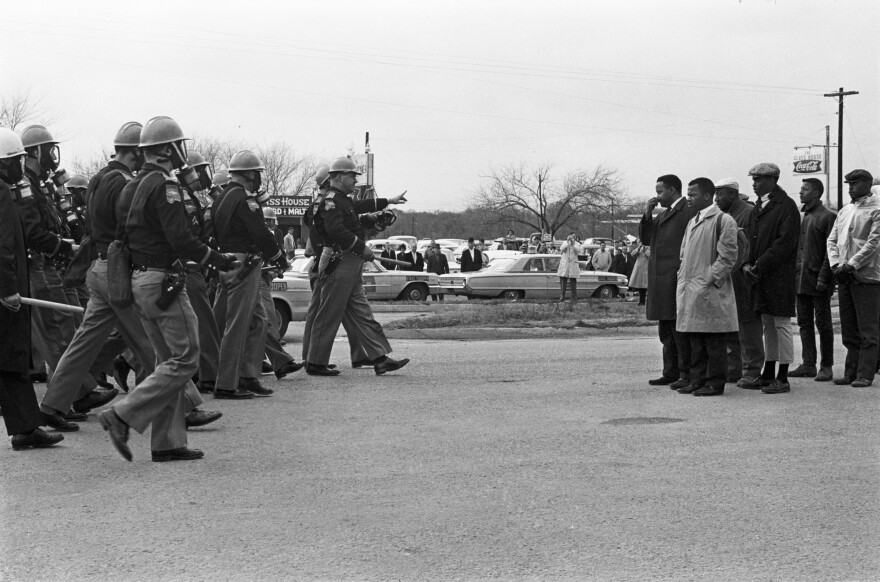
On Bloody Sunday, marchers were attacked on the Edmund Pettus Bridge, March 7, 1965. Wikimedia Commons / Library of Congress.
ART SPOTLIGHT
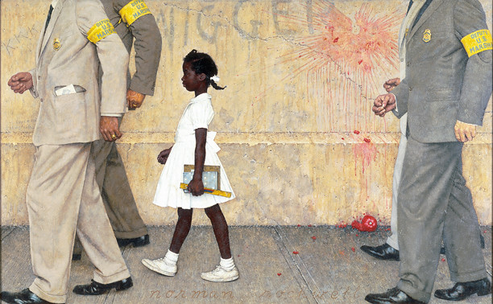
The Problem We All Live With, Norman Rockwell, 1964. The painting shows Ruby Bridges walking to school with federal marshals.
Rockwell painted Ruby Bridges small on purpose, but she controls the whole picture. The adults around her have no faces, which makes the child look even more alone. The painting turns school desegregation into one ordinary morning that should never have required federal protection.
CHAPTER FOUR
BLACK POWER, KING, AND THE UNFINISHED FIGHT
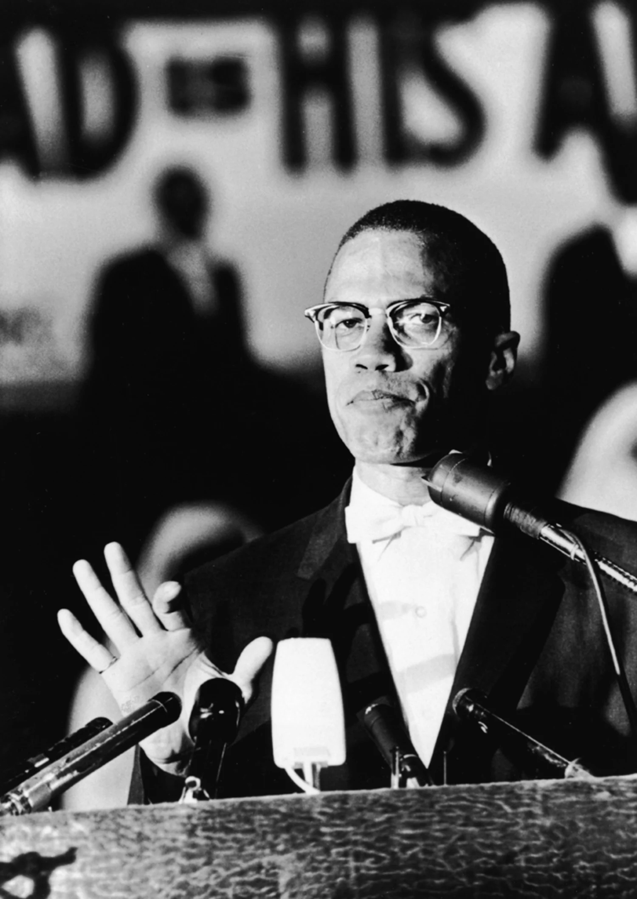
Malcolm X challenged racism with a message of Black pride, self-defense, and self-determination. Wikimedia Commons / Library of Congress.
Not everyone agreed about the best path to freedom. Malcolm X criticized slow change and questioned whether nonviolence could protect Black communities from violence. His message helped shape Black PowerA movement for Black pride, control, and power., which called for Black pride, self-defense, and control over Black communities.
Not everyone agreed on the best path to freedom. Malcolm X criticized slow change. He questioned whether nonviolence could protect Black people from violence. His message helped shape Black Power. Black Power called for pride, self-defense, and community control.
Black Power was sometimes seen as competing with King's nonviolent approach, but both came from anger at racism and a desire for dignity. Many activists wanted more than legal equality. They wanted safer neighborhoods, better schools, jobs, housing, and political power.
Black Power was sometimes seen as different from King's nonviolent approach. But both came from anger at racism and a desire for dignity. Many activists wanted more than legal rights. They wanted safety, schools, jobs, housing, and political power.
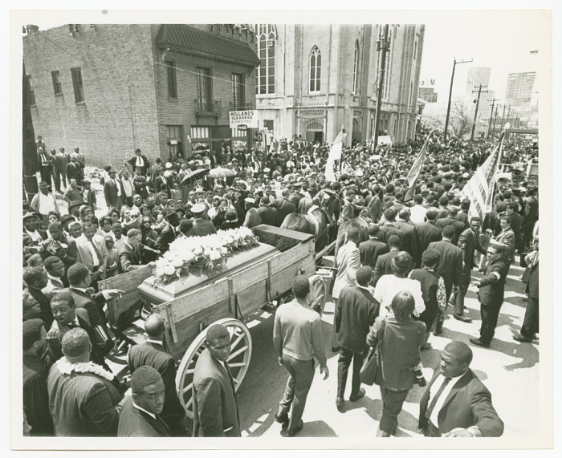
Martin Luther King Jr.'s funeral procession in Atlanta, April 1968. Wikimedia Commons.
King was assassinated in 1968 while supporting striking sanitation workers in Memphis. His death shocked the nation and sparked grief and anger. The movement had won major laws, including the Civil Rights Act of 1964 and Voting Rights Act of 1965. But the fight for equality was not finished.
King was assassinated in 1968. He was in Memphis supporting sanitation workers. His death shocked the country. The movement had won major laws. But the fight for equality was not finished.
PRIMARY SOURCE MOMENT
KING EXPLAINS WHY WAITING WAS NOT ENOUGH
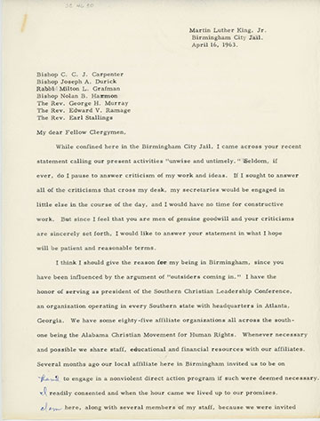
Martin Luther King Jr. wrote "Letter from Birmingham Jail" during the Birmingham campaign in 1963. Wikimedia Commons / Library of Congress search suggested.
PRIMARY SOURCE
"We know through painful experience that freedom is never voluntarily given by the oppressor; it must be demanded by the oppressed. For years now I have heard the word 'Wait!' It rings in the ear of every Negro with piercing familiarity. This 'Wait' has almost always meant 'Never.'"
Martin Luther King Jr., "Letter from Birmingham Jail," 1963
King wrote this from jail after Birmingham leaders criticized civil rights demonstrations. He argued that delayed justice keeps people trapped in injustice.
THEN AND NOW
Voting rights are never just about ballots; they are about power.
1965
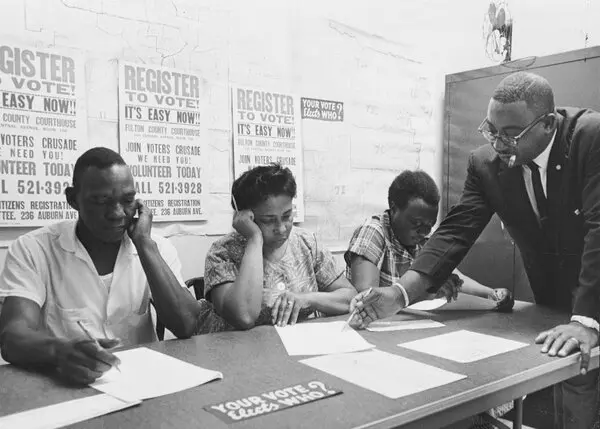
Voting rights work also happened at registration tables, courthouses, and county offices where Black citizens demanded access to the ballot.
NOW
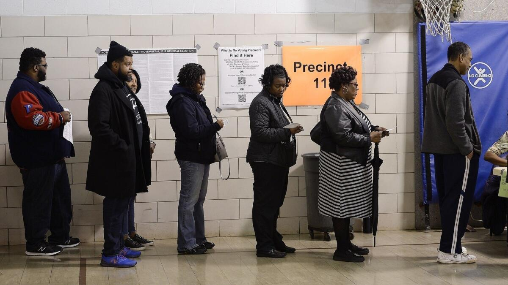
Modern voting lines show that access to the ballot still depends on time, place, rules, and power.
THEN
In the 1960s, voting rights organizers helped Black citizens register to vote despite intimidation, unfair tests, and local officials who tried to block them. Selma helped push Congress to pass the Voting Rights Act, but the daily work of registration showed what the law had to change. Democracy expanded because ordinary people forced the country to face its own promises.
NOW
Today, voting remains a public act shaped by rules, access, time, and political power. People still organize, wait in lines, register voters, and challenge barriers. The image is different, but the question of access remains alive.
CONNECTION
The Civil Rights Movement shows that rights are not protected by words alone. Laws matter, but people must also defend those laws and make sure they work in real life. The bridge and the polling line both show people waiting in public for a promise the country says it already believes in.
What does this lesson suggest about the relationship between protest, law, and democracy today?